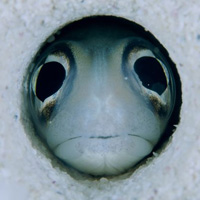
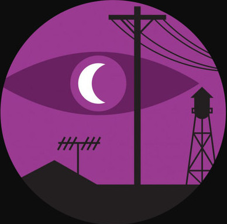

  
<section>
	<div class="layout-semibreve">

		<header class="badge-heading badge-brigade badge-blue">
			<h2>2015 Partners</h2>
		</header>
		<div class="layout-gutter">
			<p>
				Code for America works with cities and counties in this world and others through its fellowship program, community brigades and network of civic innovators. While we offer a number of programs, the following list of governments are participating in our 2015 fellowship year.
			</p>
			<h3>
				Meet Our 2015 Government Partners
			</h3>
            <ul class="list-no-bullets layout-grid">
                <li class="layout-crotchet">
                    <a href="../atlantis" class="billboard">
                        
                        <strong class="billboard-label">Atlantis</strong>
                    </a>
                </li>
                <li class="layout-crotchet">
                    <a href="../cabotcove" class="billboard">
                        
                        <strong class="billboard-label">Cabot Cove</strong>
                    </a>
                </li>
                <li class="layout-crotchet">
                    <a href="../emeraldcity" class="billboard">
                        
                        <strong class="billboard-label">Emerald City</strong>
                    </a>
                </li>
                <li class="layout-crotchet">
                    <a href="../nightvale" class="billboard">
                        
                        <strong class="billboard-label">Night Vale</strong>
                    </a>
                </li>
                <li class="layout-crotchet">
                    <a href="../springfield" class="billboard">
                        
                        <strong class="billboard-label">Springfield</strong>
                    </a>
                </li>
                <li class="layout-crotchet">
                    <a href="../winterfell" class="billboard">
                        
                        <strong class="billboard-label">Winterfell</strong>
                    </a>
                </li>
            
            </ul>
			<h3>
				Interested in a Specific Program? 
			</h3>
			<ul>
				<li>Meet Your <a href="../../about/brigade">Brigade</a></li>
				<li>Enlist the <a href="../../about/fellowship">Fellows</a></li>
				<li>Embrace <a href="../../about/peernetwork">Open Data</a></li> 
			</ul>
		</div>
	</div>
</section>

            
    
